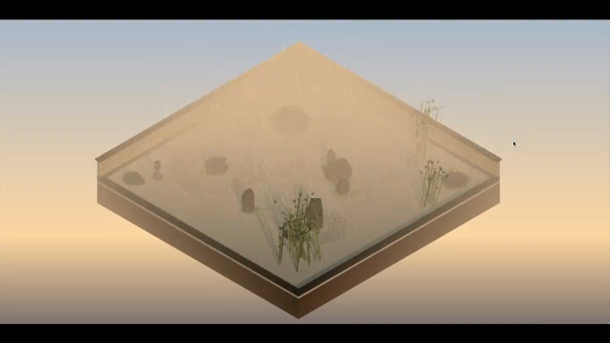

Solo · MIT · WebGL Zen Simulation独立 · MIT · WebGL 禅意模拟
Robot Karesansui
R3F · WebGL · Shader Simulation · Systems Toy
An autonomous zen garden where a robot rakes sand, returns to recharge and continues as weather and light change. I built the simulation, shaders, robot state machine and synthesised audio to explore atmosphere through interacting systems. 一个自主运转的枯山水庭院：机器人耙沙、返回充电，再随天气与光照变化继续工作。我负责模拟、着色器、机器人状态机和合成音频，探索多个系统如何共同营造氛围。
Problem问题
Keep a quiet garden feeling alive without crowding its calm routine.
让一个安静的庭院有生气，又不打破它的平静。
Decision决策
Run two linked rhythms: a robot that rakes and returns to charge, and an environment cycle of day, night and three rain tiers, over a sand heightfield that slowly forgets.
两个相连的节奏：机器人耙沙、没电回去充电；环境按昼夜和三档雨循环；沙面高度图会慢慢抹平痕迹。
Outcome结果
An autonomous garden simulation that runs in the browser.
一个能在浏览器里自己运转的庭院模拟。
Two connected rhythms两个相连的节奏
Rake耙沙
Robot movement leaves grooves in the heightfield.
机器人移动，在高度场留下沙痕。
Recharge充电
Battery state sends the robot back to its dock.
电池状态触发返回充电座。
Continue继续
Raking resumes while grooves and the environment evolve.
耙沙继续，沙痕与环境同时变化。
Weather and day/night run alongside this robot routine; they are not extra steps in its battery cycle.天气与昼夜在机器人流程之外持续运行，并非电池循环中的额外步骤。
Keeping motion and marks aligned让动作与沙痕对齐
A 1024 × 1024 heightfield stores the sand simulation, with diffusion and drift relaxing the grooves. The robot follows a precomputed Catmull-Rom path aligned with the ripple pattern. A battery state machine controls the two-leg approach to the dock; separate environment states handle the three-minute day/night cycle and three rain tiers.
1024 × 1024 的高度场保存沙面状态，通过扩散与漂移让沟槽逐渐恢复。机器人沿预计算的 Catmull-Rom 路径行动，并与波纹图案对齐。电池状态机控制分两段返回充电座的路线，独立的环境状态负责三分钟昼夜循环与三个雨量等级。

Procedural detail, restrained pacing程序化细节与克制的节奏
The scene uses procedural geometry and shaders, with synthesised environmental sound through the Web Audio API alongside generated background music. The design constraint is pacing: groove decay, weather changes and animal arrivals need enough variation to keep the garden alive without crowding its quiet routine. This is an atmosphere and simulation study rather than a conventional game loop.
场景使用程序化几何与着色器，环境音效通过 Web Audio API 合成，并搭配生成的背景音乐。设计上的约束在于节奏：沙痕消退、天气切换与动物出现需要带来变化，又不能打断庭院平静的日常。这是氛围与模拟研究，而非传统的目标驱动游戏循环。
